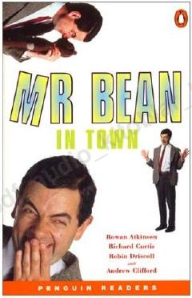

MBMr. Bean restoranda tug'ilgan kunini nishonlashga urinib, kutilmagan kulgili sarguzashtlarga duch keladi.
Mr. Bean o'zining tug'ilgan kunini nishonlash uchun restoranga boradi, ammo u yerda turli xil kulgili va noqulay vaziyatlarga tushib qoladi. U buyurtma qilgan taomi xom ekanligini bilib, uni yashirishga urinadi va bu jarayon yanada ko'proq tushunmovchiliklarga sabab bo'ladi.